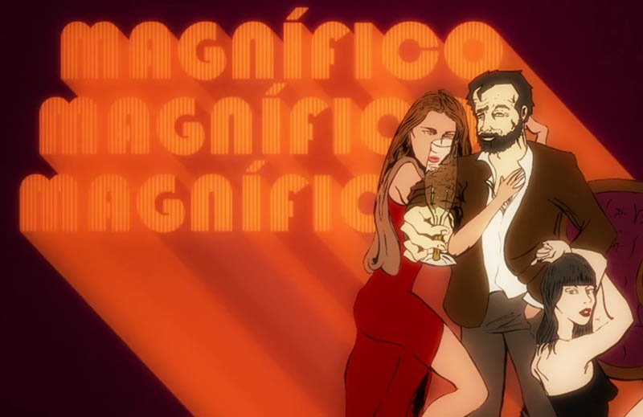
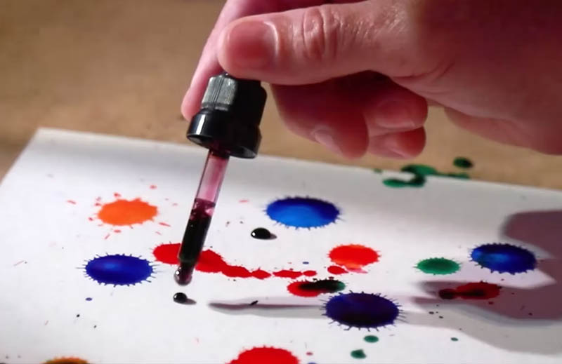
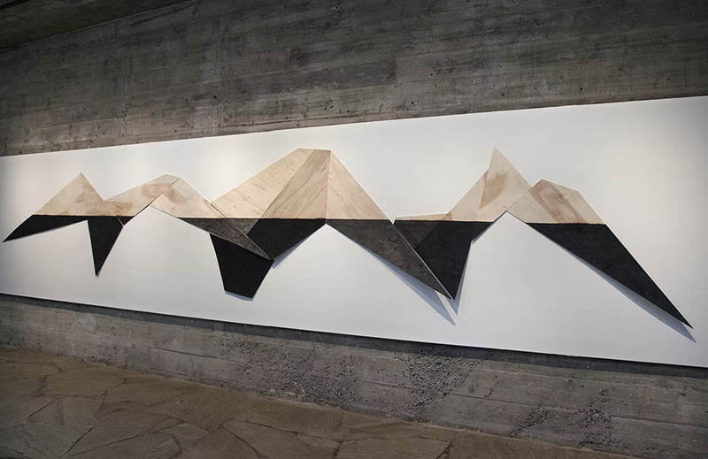

TCHELO NOGUEIRA
|
DIREÇÃO CRIATIVA E CONCEITO
|
REDATOR E DIRETOR DE ARTE
Sobre
|
LinkedIn
|
Contato
|
PT
/
EN
CRIAÇÃO ALÉM DA PUBLICIDADE
CURTA-METRAGEM
Um Prato que se Come

ANIMAÇÃO
Magnífico + Bad Trip

CONCEITOS QUE VIRAM EXPERIÊNCIAS
Roche + Itaú + Porto Seguro

ARTE CONCEITUAL
Desenhos, objetos e instalações
PROPAGANDA POLÍTICA
PREFEITO HADDAD
2012
SENADOR ZÉ REINALDO
2018
GOVERNADOR CLÉCIO
2022
PREFEITO JARDEL
2024